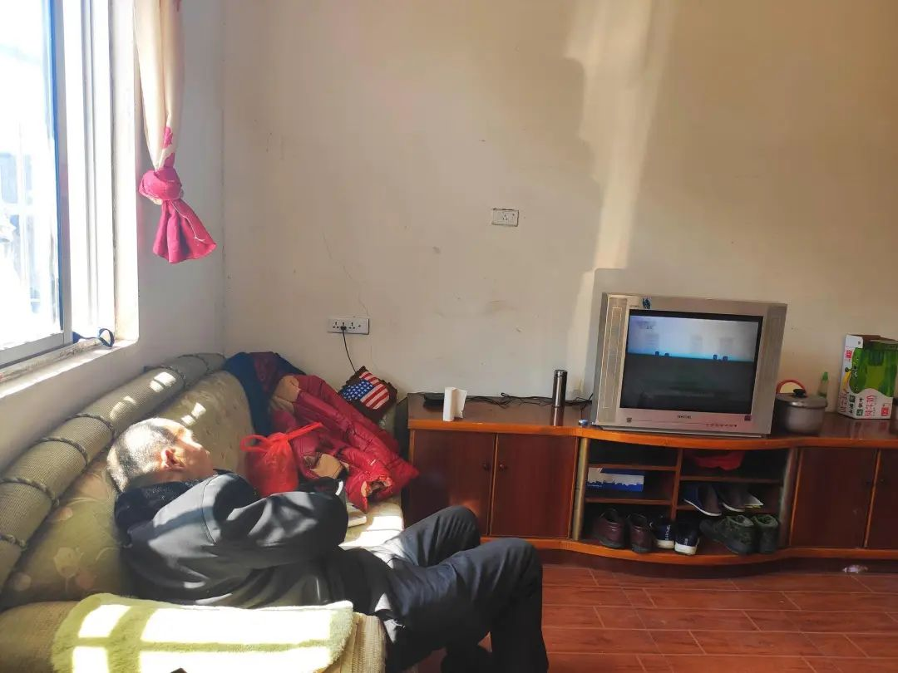
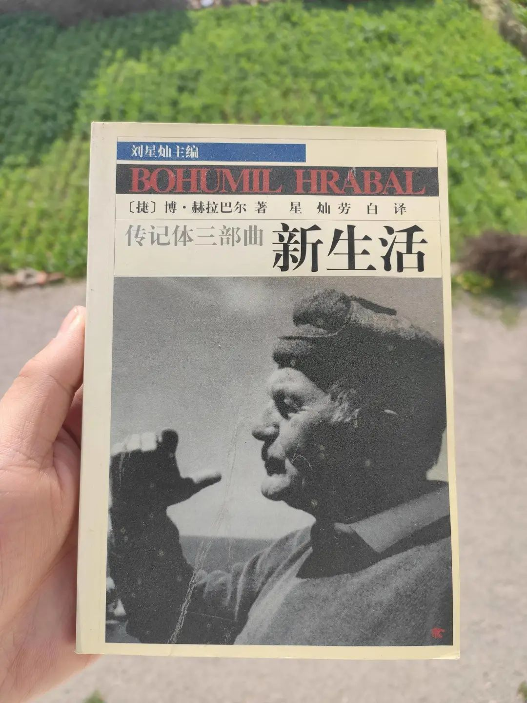

乡村厨师：“赚钱再重要，也不能拿生命开玩笑”
原文链接 备份链接 “ - 疫 情 之 下 - 父亲作为一家之主，把家里卖粮食的一万多块钱当做货款结给了供应商，按照他交代给我们的原话：“咱们已经吃亏了，就不要再让别人吃亏了，也让人家回家好好过个年。” ” …

湖北人什么时候能回北京？依然个未知数。青年作家邓安庆的老家湖北黄冈武穴市，离武汉两百公里远。每年春节，他跟千千万万人一样回家乡过年待一周再返岗。1月23日，武汉封城，次日，黄冈以及所管辖的县市也都相应“封城”。直至现在，局面依旧严峻。
瘟疫中，他不止一次发现父亲身上的“认命”，乡邻间的走家访友被全新交流方式替代，其间，村里的葬礼也草草了事，“如果年前把氧气瓶撤了，人下了葬，现在也不至于这么尴尬。”他也想，如果我一个人离家，那我父母该怎么办？
···············
❶
***疫区买药***
父亲的胰岛素又用完了，跟住在市区的哥哥商量好，他买好药后送到百米港大闸，我跟母亲开着电动三轮车去接应。到了大闸后，土堆路障挡住了去路，我们只好把车子停下来，人从土堆上翻踩过去；哥哥那头也被土堆挡住了，只好也翻踩过来。
两个土堆之间是一座桥，我们在桥中央碰头了。我把母亲准备好的一大袋刚从菜园摘的蔬菜、薯粉、酸菜、侄子画画要用的彩笔等，送到我哥哥的电动车那里，哥哥则把药递给我。
这是1月31日禁止机动车出行之后，我们跟哥哥第一次见面。一晃就到了二月中旬了。虽然在同一个城市，他们住在武穴市区，我们在乡下，直线距离也就十来公里路程吧。如果开车的话，不到二十分钟就能到家。要不是因为父亲的药没有了，恐怕我们到现在都没机会见面吧。
哥哥给父亲买的是精蛋白生物合成人胰岛素注射液，父亲患了糖尿病，每天都要注射这种药物。如果断药一段时间，会引起高血糖，引发恶心、呕吐、嗜睡、食欲不振等症状。如此后果让我们不敢掉以轻心。
上一周也是药没了，市区没办法去，我们只好骑车去镇上买药，到了八一闸，大路上也是设置了路障，车子开不过去。父亲让我留下看车，他走到镇上去买药。我说我去，他不让，说那些药我搞不清楚。
等他回来时，我远远地看到他迟缓无力的步伐，上坡时他气都快喘不上了，脚踩在烂泥里，腿弓着使不上劲。我赶紧过去扶他，他衣服的腋下都湿了。我问他如何，他摇摇头，“所有药店都关门咯，打电话也没得人接。大街上都没得人。”
还好后来想办法托人买到了胰岛素，否则就麻烦了。但我永远也忘不了他走路的那个样子，痛楚感久久不去。
这一次，幸亏我哥哥想办法从市区的药店买到了。如果到后面进一步采取封锁的措施，药店不开门，该上哪里去买？如果非得去医院的话，现在这个情形过去安全吗？毕竟根据官方发布的信息，武穴确诊感染病例两百多了……这些都是日后要碰到的实际困难，想想都头疼。
❷
***如果我一个人离家，***
***那我父母该怎么办？***
等哥哥走远，我们也该回了。母亲开着电动三轮车在长江大堤上往家的方向驶去，我坐在后车厢。本来我想来开，母亲不放心。在她眼中，我永远是那个莽莽撞撞的小孩子。长江大堤昔日是交通要道，现在完全可以放心地走，反正前后一辆车都没有。开着开着，母亲停下来，问我冷不冷，此时江风吹来，我说不冷。母亲又继续往前开，速度慢了很多。我知道，她还是怕我冷。
我想起上一周去镇上是父亲开着同一辆车载我的。开车的途中父亲说了一句什么话，风太大，我没有听清。再问他，他说：“你恐怕一时半会儿回不到北京去咯。”我大声地回：“是的，我们公司说延迟开工咯。”父亲笑了一下。我问他笑什么，他说：“这么多年咯，你第一次在家里待这么长时间。”
父亲看电视睡着了。
算来真是，从1月19日离开北京算起，我在家待了快一个月。我曾问过自己后悔回来吗，毕竟回来之前，我就已经知道有疫情了。如很多朋友那样，完全可以取消行程待在北京，那时候疫情还没有大范围地爆发，还算安全。哪怕回来了，也有很多人趁着“封城”的前几个小时连夜离开了湖北，我一个好友就是这样，走之前他专门问过我要不要一起离开，我拒绝了。
我没有办法一个人离开。我要是不在家里，我父母亲该怎么办？要知道我回家第一件事情就是告诉他们疫情的事情，他们完全没有当一回事，我一边说他们一边点头，然后就去忙了。
无论怎么说，他们眼中所看到的是一个安静祥和的乡村，大家从全国各地回来团聚，要准备各种年货，还要忙着过年的各种事宜。这种远在武汉的事情，跟我们有什么关系呢？他们看不到危险的。再看我的那些叔爷婶娘，他们也跟我父母亲一样。如果那时候我不在他们身边，父母亲深陷在家里，不知道外界消息，也不知道保护自己，我会寝食不安的。
我对他们有太多愧疚了。过往的每一年，我在家里就像是客人一样，住个几天就走，连行李箱里的衣服都不会拿出放在衣柜里。而母亲每一天都想着法子做好吃的给我，生怕在这短短几天时间内，我没有吃饱吃好。父亲生病，我也没有陪过他上医院，都是母亲照料他，拿药也是父亲自己去药店和医院的。如果这次疫情我不在，我哥哥也没有回，那我父亲该怎么办？那种孤立无援的感受，我不敢想。
作为不能陪伴的弥补，我时常汇钱给他们。但是他们不会用的，我知道。他们会存下来，将来还要留给我。无论我怎么强调我自己会挣钱，他们也不为所动。他们永远只跟我说家里挺好的，你不用担心。我不在家，他们只选择告诉我好的事情，不好的他们都自己默默承受了。但是这次不能这样，他们还无法明晓疫情的严峻程度。所以，我一定得在家，就像是牢头看着两个“犯人”似的。
❸
***“******这真是这辈子过得***
***最冷清的春节了******”***
刚回去的那段时间，眼看着疫情蔓延到多个省份。关于这方面的消息，我一看到就跑去跟我父母说。母亲一边烧火一边有点儿烦躁地说：“好咯好咯，你为么子一天到黑都说这个！”我说：“不能不说啊！不能去人多的地方，要戴口罩！要勤洗手……”母亲说：“在乡下要是戴口罩，不笑死人咯。你看哪个是戴口罩的？”我焦急地说：“不能疏忽大意啊。不能因为别人不戴，你就不戴。”
毕竟我有太多亲戚是在武汉生活和上班的，他们要回来过年，还要走家串户地拜年，哪个人会戴口罩？会勤洗手？大家依旧按照年复一年的过年惯例走动。这个真是不敢想。可是母亲还是没有怎么放在心上。
为了让母亲有所意识，我也可谓是“用心良苦”。等她到我房间来说话时，我趁机放了十几个疫情的视频给她看。她认真地看完，皱着眉头说：“有这么严重了？”我说：“当然啊。你们在乡下看不到这些消息，外面都非常紧张了。”
又说到了拜年的事情。我头疼的是大年初一到初三的拜年。我跟母亲说：“真希望那些亲戚们不要来拜年了。很多人都说了电话拜年就好了。”母亲说：“那你也没办法说啊，很多亲戚连联系方式都没有，也就过年来一次。”我又说：“那你要戴口罩。”母亲说：“戴口罩接待客人多不礼貌。”我急了，“是面子重要，还是命重要啊？”母亲说：“你不拜年，阻止不了别人拜年。这个挡都挡不住的。”

母亲在灶屋。
而父亲那边，我也没放过。他是一个非常爱去玩牌的人，不论是天晴还是下雨，他在家里总是待不住。垸里有个麻将馆，他常过去看牌。等他回来，我把口罩塞给他，严肃地跟他说：“爷，你这样乱跑，要是感染了，全家人都跟着感染。这个事情不是开玩笑的。”父亲惊讶地看着我说：“哪里有这么严重哦，莫自家吓自家。”我不管，依旧把口罩塞给他，让他只要是出门就一定戴上。他拿着口罩翻来覆去地看，“我要是戴这个，别人会笑话我的。”我说：“怕个么子！我管不了别人，但是你一定得戴，这个我得管。”
不过，父亲很快就不去麻将馆了。听他说，有人举报麻将馆里聚众赌博，派出所来了人，捣毁了麻将桌，而且还对那些打牌的人处以罚款。如果再打牌的话，还要拘留他们。这一下子，没人打牌了。我父亲也只好缩在家里看电视。我也松了一口气。
不过，真正让我彻底松一口气的，是1月25日，也就是大年初一那天呈现的场景。
时间再往前推两天，1月23日，武汉“封城”；紧接着1月24日，也就是除夕这天，黄冈市区“封城”，到了下午我老家武穴也传出了“封城”的文件。
我把这些消息都告诉了母亲。24日下午，母亲跟我说：“已经跟你哥说了，晚上和明天就去他家里不出来。要是有拜年客来，咱们家没有人。人家要是问起，就说去街上过了。这样别人也没话说。”看来天天在面前唠叨疫情的事情起了作用。我心里也落下了一块石头。
我们在市区哥哥家里度过了除夕夜，大年初一下午，哥哥开车送我们回乡下，出小区，到了长江大堤下面的马路上。这条马路是武穴市区的主干道，大年初一，要是搁到往年，肯定是人挤人车堵车，现在却一路畅通无阻。不一会儿到了我们垸里，家家大门紧锁，水泥路上一个人都没有。看来，我们的担心多此一举了。大家突然间都有了共识，没有人出门拜年，都缩在家里，也不串门。
母亲感慨说：“这真是这辈子过得最冷清的春节了。”很快，她又说：“不过也好，我轻松很多了。往年拜年的人来了一拨又一拨，接待这个又接待那个，忙得不可开交。现在可以躺在家里。本来大家都不怎么愿意出门拜年，也就细伢儿高兴。现在好咯，大家都可以松一口气了。”
正说着话，手机响了，一看是亲戚打过来的。接着，好几个亲戚也都打了过来。在母亲的催促下，我也拨打了几通电话给我的舅舅、姨娘、姑妈他们。大家都说：“就在电话里拜个年哈。”新年快乐。理解理解。这是拜年那几天，我们说的最多的两句话。
❹
***“你莫过来，离我远一点儿！******”***
一夜之间，大家的习惯都变了。这种变化，最直接的体现就是距离。
我们垸是一个大垸，绝大部分人都姓邓，前屋后舍，沾亲带故，基本上都是本家。春节这样一个难得的闲暇时光，大家喜欢聚在一起打打牌搓搓麻将，下雨时这家坐坐那家聊聊，天晴时一起坐在屋场上晒太阳。
但是今年这些场景基本上都没有了。从大年初一开始，经常看到电动三轮车从屋边开过，车厢里搁一个大功率扩音器，正在播放广播，让大家尽量待在家里，哪里都别去；母亲说起去村里买菜时，垸口除开之前停着一辆面包车防止车辆进出外，还专门有人把守，只要人们聚集聊天，那人就会去劝阻，而且店铺都关门了；家家门口都贴上了《新型冠状病毒感染的肺炎公众防护提示》和《武穴市人民政府致全体市民朋友的一封信》；村干部挨家挨户发放一次性口罩，对返乡的人还做了登记和体温测量。
大家基本上各自缩在家中不出门，有时候实在是闷了，比如我父亲就会忍不住跑出来，也开始知道戴口罩了。在路上碰到人，也不再凑到一块。想要聊天了，相互之间隔得开开的。大家聊天的内容也是围绕着疫情展开的，今天电视上说武穴新增多少确诊感染人数啦，哪些省份的医疗救护队来我们这里了，超市的米眼看着要涨价了……大家虽然聊着，却都定在自己的位置上，不靠近对方。如果有人不懂这个默契，朝自己走来，就有人半开玩笑半认真地喊道：“你莫过来，离我远点儿！”
这种人际交流的变化，对于我父母亲，还有上一辈的人来说，完全是崭新的。我们这一代习惯有一定距离感的交流方式，对于我的父母亲，还有乡邻们来说，都需要从头学习。

每日从菜园摘的新鲜蔬菜。
有时候我会站在旁边听他们聊天。对于他们，我都熟得不能再熟，每一个人这几十年来的际遇都在我内心中翻涌。在我的书中，他们中间有一些被我写过，有一些我没写，有一些我合并成为一个人物，有一些我拆散到其他人物身上。时间累积的力量，体现在他们的额头、发色、皱纹，还有黧黑的手掌，蹒跚的步伐，说话的声调上。
这个村庄除开房屋的翻新，基本格局几十年来无大变，我熟悉的这一代人逐渐凋零，新生的一代人也随着年轻的父母飘散各地。但是今年提供了一个契机：本来跟我一样只待几天的晚辈，都不得不留下。几代人同处一室如此长的时间，那些过去因为时间太过匆忙来不及培育的情感，在这个“长假”里开始变得舒展起来。
上一辈人从一开始觉得这是离自己很遥远的事情，到后来人人戴起来口罩，也开始注意与人保持距离。这个转变过程，除开政府的不断宣传，我觉得还有年轻一代起的作用。他们就跟我一样，不断地在父母耳边说要注意防护。行为方式的改变，能够在一夕之间改变，的确是让我惊叹。
让我惊叹的还有母亲的变化。在家里自我隔离多时，有时实在觉得烦闷，我跟母亲说我出门走走。母亲提醒我说：“记得戴好口罩！”我说晓得。没想到之前对戴口罩一事不当回事的母亲，现在反过来监督我了。
❺
***父亲的“认命”***
母亲进一步还监督我父亲。
拿完药回到家中，没有看到父亲的踪影。母亲气恨地说：“又不晓得跑到哪里去了！不要命是啵？！”直到晚上好不容易等到父亲回来，在灶屋我告知他药已经拿到了，父亲高兴地说：“要得要得。”
等他打完针再回到灶屋吃晚饭，母亲严肃地说道：“你自家不要命没得关系，全家人还要活。你心下要有个分寸！”
父亲说：“没得事，我戴了口罩！再说身边又没得人感染，莫慌里慌张的。”
母亲说：“事儿来了就迟咯，你没听到庆儿说，有人出门买菜，就几分钟的时间感染上咯，你还说没得事！”
父亲摊手说：“那有么办法？这就是命。”
我又一次看到父亲身上的那种“认命”：他觉得在这样一个灾祸面前，你感染了算你倒霉，没有感染那就不要吓自己。反正这就是命。落到你头上，你跑也没有用。至于戴口罩、勤洗手之类的训诫，在他看来既麻烦又无用，他也做不来这些繁琐的预防工作。
吃完晚饭，在房间里看新闻，父亲听完新闻主播说确证、疑似、死亡分别是多少例后，叹口气，“人忙一辈子，突然因为这个事儿死掉咯，想想真没得味！”母亲撇嘴道：“你吃饭吃得倒是几有味哩。”

“在家翻到了赫拉巴尔，老泪都要出来了。等疫情结束的未来，一定要去捷克看看老赫的酒馆和故居。”
既然提到死，父母亲说到垸里前几天刚去世的方爷。几个月前，方爷因突发脑梗住院，后来出院后一直在家里躺着，父亲去看过他，人已经昏迷不醒很长时间，单靠氧气瓶硬撑着，到了前几天的凌晨离世了。方爷跟父母亲年龄相仿，老伴儿白云娘前几年肝癌去世。几个儿子都在江苏开店做生意。现在一个儿子在家里守着，其他孩子也回不来，毕竟武穴已经封城了。
母亲说：“如果年前把氧气瓶撤了，人下了葬，现在也不至于这么尴尬。”
我问尴尬在哪里，父亲接话说：“如果现在人没了，有么人去给他抬棺材？疫情这么严重，没得人敢过去。”
我又问：“现在不火葬吗？”
父亲回：“这几年倒是没有强求火葬，所以现在都是土葬。”
母亲又说：“再一个，儿女在外头，也回不来。”
我想了一下，说：“那现在人没了，只有请火葬场的人开车来把尸体拉走火化，他儿子把骨灰拿回来放着，等疫情结束再下葬。”
母亲点头说：“就是这样的，已经火化了，用骨灰盒拿回来，悄不声息地埋在了你白云娘棺材旁边。就他们屋里几个人去了，场面听说几冷清哩。”
父亲又说起了白云娘，“嚯，那葬礼搞得几风光！几像样！请了八个道士念经，沿路撒钱，各种花圈迷花了眼，花费七八万……”
母亲打断说：“你是不是几羡慕？真是花冤枉钱，人都死了，这些钱都给别人咯，有么子味？也就是讲排场讲好看。”
父亲被怼得没话说，忽然又转头跟我讲：“庆儿，我要是死了，就一个愿望，你哥捧着我的骨灰盒，你在后面抱着我的遗像，你老娘扛个铁锹，找块地方把我随便埋了就算了……”
母亲噗嗤笑着打断：“好不吃辛苦！我才不会扛个铁锹哦，拿着你的骨灰，直接往长江水里一撒就完了。”
❻
***“你最重要，全世界最重要，***
***要得啵？******”***
其实，父亲已经不止一次说到死了。
前几年，我离家时，他突然问我要不要看看他已经请人给自己画好的遗像，怕到时候来不及准备。几年过去了，他这次又提起了葬礼的事情。虽然我们用玩笑话把它打发过去了，可是它梗在我心里无法纾解。的确，我该考虑到这些问题了。
现在电视上的那些播放的死亡人数，让他感觉内心非常害怕非常紧张。这个我感觉得到。父亲起身去上厕所，我看他现在走路一搓一搓，脸型消瘦，身体佝偻，最重要的是没有精气神。母亲悄悄跟我说：“他现在打牌都打不得，手拿牌都拿不起来。有一次别人告诉我，他从牌桌上起来，裤子后面是黄的……”
我立马上网查询了一下，原来是糖尿病的并发症，即自主神经受到损害，出现大小便失禁。身体的一点点朽坏，带来的必然是精神上的一点点衰颓。死亡，就像是一个随时会打下来的重拳，它没有出手，可它随时会出手。

母亲在门口吹风。
电视上关于疫情的报道一个接着一个，还在播着。我们默默地看了半晌。母亲忽然问：“庆儿，要是我感染了这个病，你会照顾我啵？”我愣了一下，随即说：“肯定会哩！”
我想起之前跟母亲说起武汉一个小伙子感染后情况十分危急，是他的姐姐连续多天在病房里照料，直至他最后病愈出院。我是不是真能做到他姐姐那样，我不知道。很多事情临到发生时，才会看到自己是勇敢的还是怯懦的。
母亲点点头，笑道：“我也是傻，要是我感染了，估计全家人都感染咯。那才是麻烦嘞！所以，还得要在屋里好好待着。好好活着，比么子都重要！”
“么子重要咯？”一回头，父亲上完厕所回来了。
母亲撇撇嘴说：“你最重要，全世界最重要，要得啵？”

在公众号后台回复彩蛋，送你一个彩蛋
撰文、摄影：邓安庆
编辑：欧阳诗蕾
运营编辑：二水


原文链接 备份链接 “ - 疫 情 之 下 - 父亲作为一家之主，把家里卖粮食的一万多块钱当做货款结给了供应商，按照他交代给我们的原话：“咱们已经吃亏了，就不要再让别人吃亏了，也让人家回家好好过个年。” ” …
原文链接 备份链接 连续多天的阴雨天气过后，到了大年初三，开始变成阴天了。垸里的水泥路被风吹干，空气中有一丝松动。几乎能感觉到初一、初二那种家家户户大门紧锁的严峻态势变得和缓了，开始有人打开大门在屋场打扫，菜园里婶娘戴着口罩在割包菜，水泥 …
原文链接 备份链接 车子从小区开出来，到了长江大堤下面的马路上。这条马路是武穴市区的主干道，大年初一，如若搁到往年，肯定是人挤人车堵车，现在却一路畅通无阻。马路一侧停着一排车子，零星的行人都带着口罩。 在车上翻看朋友转发来的视频，一个是隔 …
原文链接 备份链接 1月23日清早起来时，看到武汉封城的消息。起床后跟正在做饭的母亲说了一声，母亲不是很能理解，也不大关注。这几天一直在她耳边念叨太多疫情的事情，我感觉她都有些消化不过来了。很快黄冈市区也封城了，到了下午我老家武穴也传出了 …
原文链接 备份链接 以下文章来源于地球青年图鉴 ，作者地青 杨飞霖站在人来人往的纽约时代广场，戴着口罩，手里举着一块牌子，上面写着一句她自己想出来的标语“Mask+Asian≠Virus（口罩+亚裔≠病毒）”，牌子的另一面则写 …